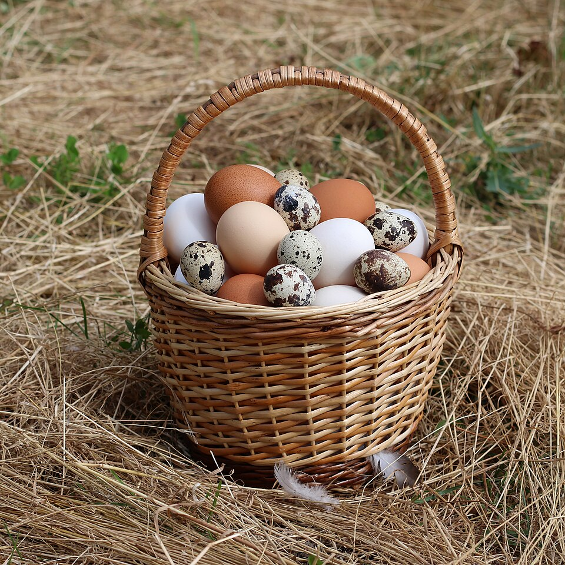

Lo que vendemos
- Huevos blancos
- Mediano
- Grande
- Extra grande
- Huevos marrones (criollos)
- Grande
- Extra grande
- Gallinas de descarte para sancocho, por encargo

Precios por cartón
| Tipo | Tamaño | 1 a 9 cartones | 10 cartones o más |
|---|---|---|---|
| Blanco | Mediano | RD$ 210 | RD$ 200 |
| Grande | RD$ 235 | RD$ 225 | |
| Extra grande | RD$ 260 | RD$ 248 | |
| Marrón (criollo) | Grande | RD$ 285 | RD$ 270 |
| Extra grande | RD$ 310 | RD$ 295 | |
| Precios en pesos dominicanos. Delivery gratis en Moca desde 5 cartones. | |||
Los más vendidos de octubre
- Marrón grande
- Blanco extra grande
- Blanco grande
Glosario de la granja
- Cartón
- Bandeja de cartón prensado con 30 huevos, la unidad en que vendemos.
- Gallina ponedora
- Gallina criada para poner huevos, no para carne. Pone casi un huevo diario.
- Huevo criollo
- Huevo de cáscara marrón de gallinas que pasan parte del día sueltas en el patio.
- Galpón
- Nave techada donde duermen y ponen las gallinas.
Zona de entrega
Repartimos en Moca y, desde noviembre, también en Santiago.
Gallinas en el patio
Video de una gallina buscando comida en el patio. Autor: Nesnad, Wikimedia Commons (CC BY 4.0).